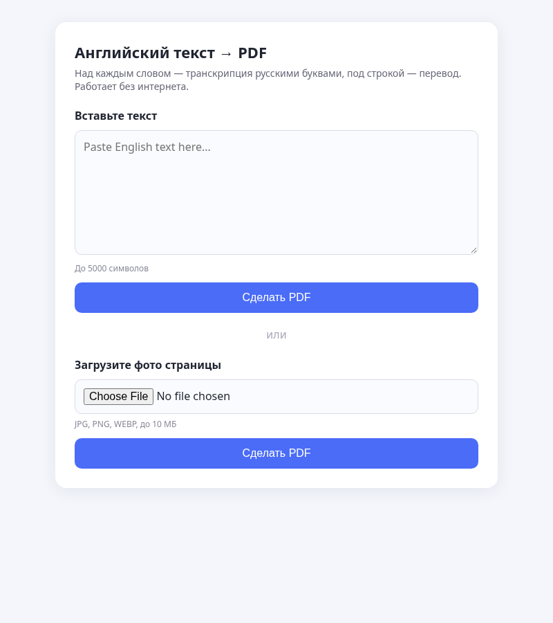

Текст → PDF с транскрипцией
Офлайн-сайт: английский текст или фото страницы учебника → PDF, где над каждым словом русская транскрипция (британское произношение), а под строкой перевод.
Как выглядит

Как работает
- Tesseract распознаёт текст с фото.
- Словарь ipa-dict en_UK (Викисловарь) даёт транскрипцию, для незнакомых слов — eSpeak-NG.
- Значки IPA переводятся в русские буквы.
- Argos Translate переводит на русский без интернета.
- Chrome сохраняет страницу в PDF.
Защита от спама: поле-ловушка, проверка времени заполнения формы, лимит запросов и пример на сложение.
Важно: GitHub Pages показывает только статичные страницы. Сам переводчик работает на Python и запускается локально на вашем компьютере.
Установка
sudo apt install tesseract-ocr espeak-ng google-chrome-stable git clone https://github.com/alekseichmsk/photo2pdf-ru cd photo2pdf-ru python3 -m venv venv venv/bin/pip install -r requirements.txt ./get_dict.sh # словарь и модель перевода, интернет нужен один раз
Запуск
venv/bin/python app.py # откройте http://localhost:8080
Тесты
venv/bin/python -m pytest -q tests